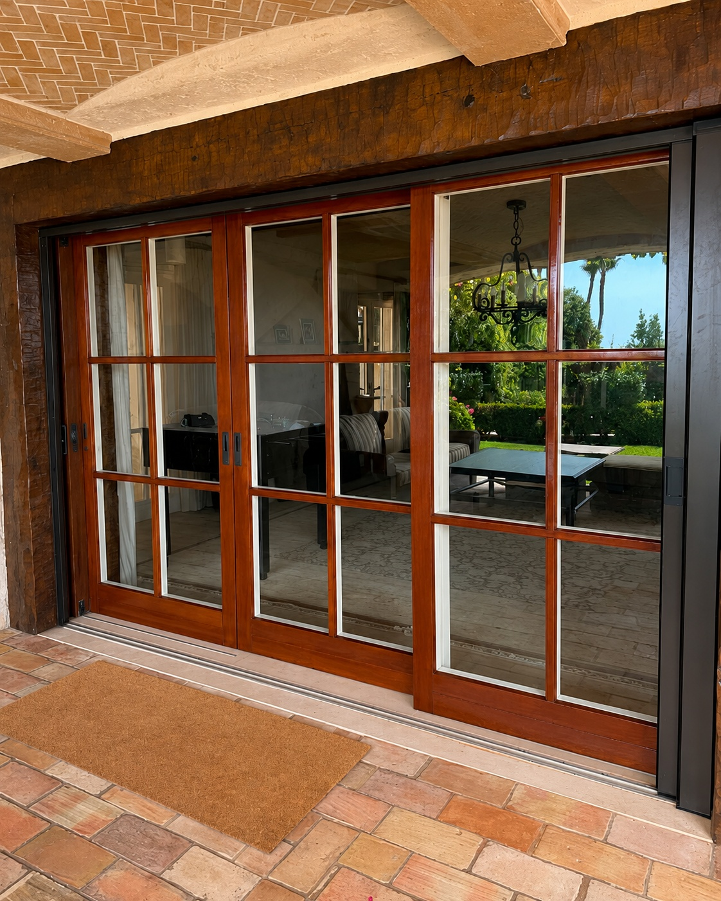
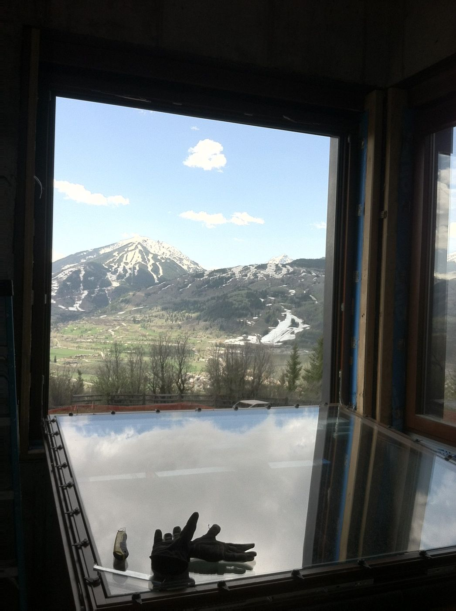
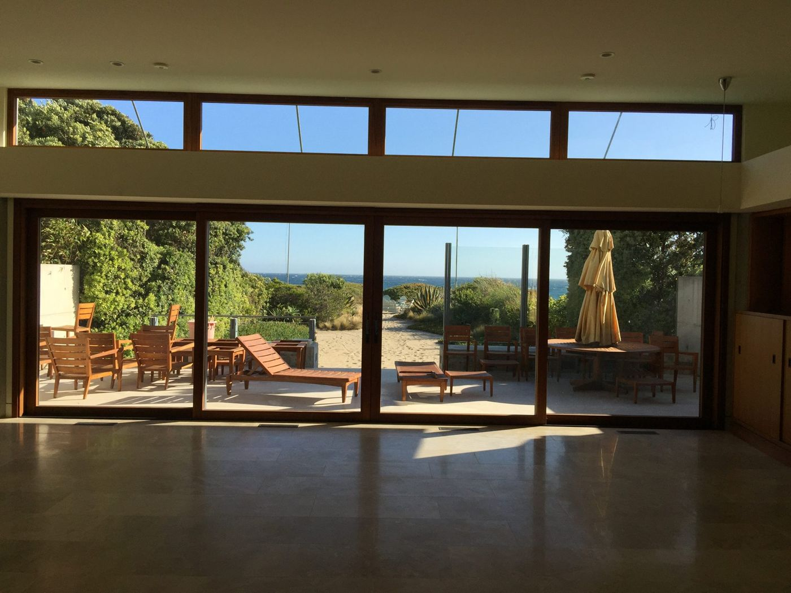

Window and Door Installation
A window or door can be a good product and still perform poorly when the opening, flashing, alignment, hardware, or final adjustments are not handled correctly. Visible Windows & Doors installs replacement windows, new-construction windows, entry doors, patio doors, sliding doors, folding doors, larger multi-panel systems, and screens.
Replacement Window Installation
Removing an existing window and installing a new one in the same opening, with attention to the surrounding frame and finish.
New-Construction Window Installation
Installing windows into a new opening during framing, working alongside builders and the construction schedule.
Entry & Patio Door Installation
Setting and adjusting entry doors and standard patio doors so they operate, seal, and lock correctly.
Sliding, Folding & Multi-Panel Doors
Installing wider door systems where panel weight, track alignment, and threshold details all affect how the door performs.

New-Construction Window Installation
On new builds, we work from the rough opening forward — checking dimensions against the plans, coordinating with the framing and weather-barrier schedule, and setting windows so the exterior finish work can proceed cleanly around them.
Replacement Window Installation
Replacement work means removing the old unit without damaging the surrounding frame, finish, or interior trim, then setting and sealing the new window so it performs as well as a new-construction installation.


Sliding, Folding and Multi-Panel Door Installation
Larger door systems put more demand on the opening itself. We confirm the header and floor are ready to carry the weight of the panels, then set, align, and test the track system before calling it finished.
Screen Installation
When a project includes a screen — a standard sliding screen, a retractable screen, or a screen built to work with a folding or multi-panel door — we coordinate it with the window or door installation so it's measured, mounted, and adjusted to run smoothly on its track.


Opening Review and Preparation
Before anything is installed, we check the opening: dimensions, level and plumb, the condition of the framing, and whether any repair is needed before the new unit goes in.
Flashing and Weather Protection
Flashing and sealant are what keep water and air out around the frame long after installation day. We install flashing tape and weather barrier material in the right order around each opening and seal the unit so water is directed out and away from the structure.


Alignment, Hardware and Final Adjustments
Once the unit is set, we adjust rollers, tracks, hinges, and locking hardware so the window or door opens, closes, and locks the way it should, then test it before the job is considered done.
Installation Process
Review the Project
We look at the product, the opening, and the goals for the job.
Confirm Product & Opening
We confirm the product ordered is the right fit for the opening as measured.
Verify Measurements
Final measurements are checked again before installation day.
Prepare the Work Area
We protect finishes and set up the space to work safely and cleanly.
Remove the Existing Product
Where applicable, the old window or door is removed without damaging the surrounding structure.
Install & Weatherproof
The new unit is set, flashed, and sealed.
Adjust Hardware & Operation
Rollers, tracks, hinges, and locks are adjusted for smooth, correct operation.
Clean Up & Review
We clean the area and walk through the finished work with you.
Installation FAQ
In many cases, yes. We review the product and the opening first to confirm it's a good fit for our installation process.
Yes. Retrofit and replacement installation in existing homes is a large part of what we do, alongside new-construction work.
Yes, when a screen is part of the project we coordinate it with the window or door installation.
We prepare the opening, install flashing and weather barrier materials around the unit, and check that water is directed away from the structure before the opening is closed up.
We adjust hardware and operation, clean the area, and walk through the finished work with you before calling the job complete.
We provide installation throughout Southern California, including San Diego, Los Angeles, and Orange County.
Planning an Installation?
Let's align the product, the opening, and the schedule from the start.